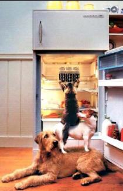
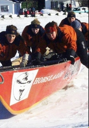
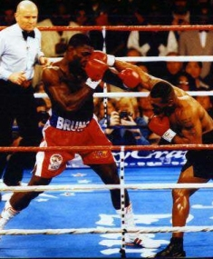

D. La résolution des conflits d'intérêts
Les solutions de prévention
Il arrive souvent, lorsque la situation semble nous inviter à la compétition-combat, que la rivalité ne soit pas la meilleure option disponible. Dans bien des cas, la collaboration ou la concertation donnerait de meilleurs résultats pour chaque personne impliquée. Comment déterminer si les conditions sont favorables à une solution non compétitive?
Lorsque la rareté du bien désiré est illusoire plus que réelle, la collaboration favorise une répartition optimale plus efficace que les résultats de la compétition et à un coût (énergie et relation) bien inférieur. C'est le cas lorsque les ressources réellement disponibles sont mal connues ou lorsque la rareté apparente correspond à un déséquilibre temporaire ou à un déficit qu'il est possible de combler dans un délai raisonnable.
Lorsque la quantité de nourriture est insuffisante pour nourrir tout le monde, la compétition-combat n'est pas nécessairement la seule solution. On peut envisager la chasse, la pêche ou la culture pour ajouter aux réserves existantes. C'est d'ailleurs ce que font les individus les plus astucieux dans une situation de ce genre; plutôt que de gaspiller leur énergie dans un combat qu'ils vont probablement perdre, ils se mettent rapidement à la recherche d'autres sources d'approvisionnement.
Claude et Micheline auraient pu se concerter s'ils avaient su déceler que la rareté qui les mettait en concurrence n'était qu'une illusion. Ils auraient pu décider ensemble qu'ils avaient tous deux la possibilité de se faire voir par le patron comme des ressources importantes. Il suffisait pour cela de considérer que l'enjeu réel n'était pas seulement la prochaine promotion mais bien plus l'accès à des responsabilités plus importantes et plus conformes aux talents de chacun.
Au lieu de se discréditer eux-mêmes en démontrant leur mesquinerie et en se neutralisant mutuellement, ils auraient alors pu s'appuyer mutuellement afin de faire valoir leurs qualités respectives. Même dans un contexte où les promotions sont rares, cette stratégie aurait sans doute été préférable pour les deux.
 Lorsqu'il s'agit des réponses à un besoin vital, la compétition peut être nécessaire malgré les victimes qu'elle laisse sur son passage. Mais il arrive aussi que, même si la rareté est réelle, le bien désiré ne soit pas aussi important qu'on est porté à le croire. Par exemple, le bien désiré n'est souvent qu'une façon parmi tant d'autres de répondre à un besoin important. Souvent, il ne répond qu'à une préférence ou à un caprice. Parfois, le besoin apparemment "vital" n'est qu'un moyen (indirect et inefficace) de satisfaire symboliquement un autre besoin non assumé.
Par exemple, la recherche de reconnaissance qui conduit souvent au burnout est typique de cette recherche symbolique car c'est l'amour qui est en réalité recherché. De même derrière la recherche insatiable du pouvoir ou l'accumulation compulsive d'argent on trouve généralement un besoin qui cherche satisfaction à travers ces symboles. C'est souvent une valeur ou une légitimité personnelle qui est l'enjeu réel et reste en déséquilibre malgré les succès symboliques.
Dans les situations de ce genre, les solutions reposent surtout sur la lucidité de chacun par rapport à ses besoin et ses objectifs. La personne qui reste sensible à ses besoins réels est capable de choisir ses buts en fonction de ce qui lui importe vraiment. C'est ce qui lui permet de rester souple dans son adaptation aux situations où les ressources sur lesquelles elle avait l'habitude de compter deviennent plus rares.
Lorsque Claude a constaté qu'il s'était discrédité en s'impliquant aussi lourdement dans une guerre contre Micheline, il fut envahi par le désespoir. Depuis longtemps, il considérait cette entreprise comme le milieu où il pourrait enfin s'épanouir pleinement dans sa profession. Exclu du comité de planification stratégique, il voyait toutes les opportunités intéressantes lui échapper. Sa réputation et son influence presque réduites à néant, il devait faire le deuil de la carrière à laquelle il se préparait depuis toujours.
La remarque d'un ami auquel il confiait sa déception lui a ouvert les yeux. "Je croyais que tu préfères conseiller les cadres au lieu d'être en position d'autorité." Oui, en effet, il ne désirait pas vraiment devenir un cadre supérieur et diriger les autres. Son sens critique et son style discret sont bien mieux utilisés lorsqu'il aide quelqu'un d'autre à mieux jouer son rôle. Les décisions rapides et les rapports hiérarchisés ne lui conviennent pas plus que la bataille constante pour gagner la course au pouvoir. C'est ce jour-là que Claude a amorcé son virage vers sa situation actuelle de consultant à son compte, une vie professionnelle qui lui va comme un gant.
L'intervention du gestionnaire
La personne impliquée peut souvent prévenir le conflit d'intérêts grâce à un effort de lucidité. Si elle reste sensible à ses besoins réels et si elle ose aller au-delà de ses idées préconçues, elle peut souvent découvrir les autres options que lui offre la situation. Mais il faut être deux pour se servir efficacement des stratégies de collaboration et de concertation; il suffit que l'un des deux interlocuteurs choisisse la compétition pour créer les conditions qui conduiront au développement du conflit interpersonnel.
Le gestionnaire peut souvent faire la différence entre la concertation et le conflit. Par la façon dont il structure la situation et par sa façon d'intervenir sur les personnes impliquées, il favorise l'un ou l'autre.
Certains gestionnaires considèrent la compétition entre employés comme une importante source de motivation qu'il faut savoir exploiter pour obtenir de chacun le meilleur rendement possible. Ils vont jusqu'à provoquer une rivalité en organisant des concours de performance entre collègues.
Ces dirigeants oublient trop facilement que ce type de compétition ne mobilise que les personnes qui estiment avoir des chances de victoire. Pour la majorité de ceux à qui on inflige ces tactiques à courte vue, l'effet est plutôt inverse: un désinvestissement un peu cynique et légèrement méprisant envers ceux qui "se font avoir" par ces méthodes. Quelle ambiance de travail et quel esprit d'équipe peut-on espérer récolter dans cette direction?
Le gestionnaire qui veut obtenir la meilleure performance de tous ses employés aurait tout avantage à créer des conditions favorables à  une collaboration harmonieuse et à une meilleure utilisation des ressources particulières de chaque membre de son personnel. Les humains aiment bien se sentir utiles et être respectés dans leurs particularités individuelles. En favorisant une exploitation par l'équipe des capacités de chacun, on peut obtenir une meilleure performance du groupe dans son ensemble et une plus grande satisfaction pour chaque individu, gage d'une motivation durable et d'une diminution du stress destructeur de vitalité.
Les moyens d'y parvenir sont relativement simples au moment de la planification du travail. Si les gains individuels dépendent directement de la performance collective et de la contribution de chacun à l'effort du groupe, les tentatives de concertation et les actes de collaboration se multiplieront rapidement. Si le responsable s'assure qu'on célèbre en groupe les succès qui reposent sur la collaboration, il entretient un climat de solidarité qui contribuera à un meilleur épanouissement de chaque individu au sein des équipes de travail.
Même quand la situation est déjà engagée d'une façon qui conduit à la compétition, le gestionnaire peut souvent en faire une interprétation plus propice au travail d'équipe. En se rappelant que la rareté peut être plus illusoire que réelle et en revenant aux repères que fournissent les besoins réels et les objectifs fondamentaux, il peut souvent trouver une façon d'aborder la tâche qui permette une meilleure utilisation des ressources individuelles et une plus grande satisfaction de chaque membre de son groupe.
Par exemple, des bonis de performance limités peuvent créer artificiellement une compétition nuisible en invitant chaque individu à s'approprier la part du lion au détriment de ses collègues. Un gestionnaire astucieux pourrait faire de l'augmentation du montant total des bonis accordés à son groupe le but collectif qui les encourage à coopérer pour dépasser les objectifs "normaux".
Mais cette solution reposerait nécessairement sur une façon nouvelle de distribuer les sommes obtenues par l'équipe en fonction de la contribution réelle de chacun à la performance du groupe. Une activité collective pourrait être une solution intéressante, mais on peut aussi imaginer une forme d'évaluation de la performance individuelle selon des critères axés sur la collaboration efficace.
Par son action auprès de l'ensemble de ses employés ou par une intervention directe auprès d'individus, le gestionnaire est en mesure de prévenir plusieurs conflits interpersonnels. En transformant les rivaux en partenaires, il les empêche de devenir des adversaires ou même des ennemis et leur évite les nombreux inconvénients du conflit d'intérêts.
Les solutions compétitives
Il arrive quand-même que la concurrence soit réelle. C'est le cas lorsque les ressources qu'on cherche à s'approprier sont réellement insuffisantes pour assouvir les personnes impliquées et lorsque l'évolution de la situation rend impossible un retour à la collaboration.
Dans ces situations, il faut avant tout se soucier d'empêcher la rivalité de dégénérer en conflit destructeur ou de s'étendre à d'autres volets du milieu de travail. Dans la mesure du possible on cherche alors à éviter, pour chaque personne impliquée, les échecs trop cuisants et les injustices inacceptables. Comme ces blessures sont définies du point de vue subjectif de chaque personne concernée, la tâche est plutôt délicate. Il est assez rare que cette solution puisse être appliquée par un des adversaires impliqués; il revient souvent au gestionnaire de mettre en place les mécanismes nécessaires à une solution harmonieuse.
Essentiellement, cette solution consiste à favoriser une saine compétition-combat (telle que je la définis dans la série "Compétition saine et malsaine"), en se rapprochant autant que possible de la compétition-émulation. On peut s'inspirer de ce que serait un match de tennis serré entre amis pour déterminer les caractéristiques interpersonelles à rechercher.
L'intervention du gestionnaire
Le responsable doit agir sur deux dimensions à la fois: le but de la compétition (c'est à dire les besoins auxquels on cherche à répondre) et la façon dont elle se déroule (les règles de participation et les critères de succès). Son rôle lui permet d'agir à ces niveaux dans la mesure où il n'est pas personnellement impliqué dans le conflit.
C'est surtout par un travail d'animation qu'il favorise la clarification des besoins réels qui sont en jeu. En aidant chaque personne impliquée à réfléchir sur ses propres motivations et à voir plus clair dans les besoins réels qu'elle cherche à combler dans la situation conflictuelle, le gestionnaire peut souvent contribuer à transformer une situation de compétition en situation de concertation.
Même dans les cas où les besoins individuels entre vraiment en conflit entre eux, cette clarification demeure utile. Elle favorise un meilleur climat en rendant légitime une saine compétition entre les collègues impliqués. De cette façon, la compétition est ouverte et non dissimulée, ce qui ouvre la porte à une intervention sur les règles applicables pour protéger les adversaires contre les dérapages et les excès qu'une compétition déloyale provoquerait à coup sûr.
Encadrement de la compétition
Il est important que la compétition se déroule selon des règles claires afin d'encadrer l'agressivité inhérente à toute compétition-combat et de prévenir le sentiment d'injustice qui conduirait à une escalade dans les contre-attaques et les représailles. Pour cela, il est préférable que la clarification des règles applicables ait lieu le plus tôt possible (ou même avant que la compétition ne soit amorcée).
 Pour que les règles soient efficaces, elles doivent être acceptées par les personnes qui y sont soumises. Il n'est pas nécessaire qu'elles leur plaisent, mais il faut qu'elles leur semblent justes autant dans leur définition que dans leur application. Si les règles sont perçues comme une façon de favoriser certains participants, elles susciteront des protestations directes ou dissimulées qui en neutraliseront les bienfaits possibles. Si elles sont appliquées sans rigueur ou de façon qui semble biaisée, elles ne seront pas respectées et deviendront même nuisibles en amenant les participants à les enfreindre de plus en plus jusqu'à ce qu'ils découvrent où se situe la règle effective.
Des règles de qualité comportent également une définition qui rend le succès mesurable; elles fournissent des critères clairs pour déterminer qui a gagné et à quel moment la compétition est terminée. En fournissant des critères clairs et objectifs que chacun pourrait appliquer lui-même, les règles préviennent efficacement l'émergence du désir de vengeance et de destruction chez les vaincus.
Enfin, les règles doivent définir qui est responsable de les appliquer. Il peut s'agir d'une personne ou d'un groupe, mais il est essentiel que leur intégrité et leur objectivité soit reconnue par les adversaires impliqués dans la compétition. Dans certains cas, le gestionnaire est la personne la plus apte à jouer ce rôle, mais il arrive souvent qu'il soit préférable de déléguer cette responsabilité à quelqu'un d'autre dont l'impartialité est plus évidente.
Lorsque le conflit est déjà en cours
Les mêmes principes s'appliquent lorsque le conflit interpersonnel est déjà établi. Il s'agit essentiellement de rétablir autant que possible des conditions favorables à une saine compétition et se rapprochant autant que possible d'une compétition-émulation.
Plus concrètement, le gestionnaire cherche à créer un environnement de saine compétition en favorisant le respect de l'adversaire et, autant que possible, des règles qui permettent à tous d'en sortir sans avoir sacrifié leur respect d'eux-mêmes ou leur digité. Son principal outil pour y parvenir est la mise en place de règles claires et justes qui sont acceptables pour les personnes impliquées. Ces règles doivent absolument comporter une définition objective du but à atteindre et des critères de succès (ou de victoire) afin de prévenir l'émergence de désirs de vengeance ou de destruction en donnant une limite au combat.
Le gestionnaire peut également aider à résoudre les conflits de ce genre en aidant les personnes impliquées à réfléchir sur les besoins qu'elles cherchent à satisfaire dans cette situation, quitte à leur proposer d'autres moyens efficaces de les combler en cas de défaite ou d'impasse. Dans la plupart des conflits interpersonnels d'intérêts, les personnes impliquées ont tendance à perdre de vue leurs objectifs et leurs besoins réels en se concentrant sur leur désir de victoire ou leur peur d'une défaite humiliante. Un retour sur les objectifs réels peut souvent désamorcer un conflit stérile en permettant à chacun d'orienter son action sur la recherche de satisfactions réelles.
Les situations de guerre destructrice
Dans les situations où le but principal d'un ou plusieurs adversaires est la vengeance ou la destruction de "l'ennemi", le conflit n'est plus lié à la rareté des ressources désirées. Ce sont les blessures subies pendant le combat qui sont devenues la source principale de motivation. Toute tentative d'intervention doit tenir compte du fait que les besoins en cause ont changé, que la recherche de satisfaction ne fait plus partie des motivations importantes et que l'enjeu initial n'a plus d'importance réelle.
Lorsque le conflit en est rendu à ce stade, seule la destruction de l'adversaire (et de tous ceux qui peuvent être considérés comme ses proches, ses alliés ou ses supporteurs) pourrait mettre un terme à cette compétition morbide. Il n'y a plus de solution ou de fin naturelle possible et il serait très étonnant de voir les personnes impliquées proposer des pistes de solution viables (c'est à dire acceptables ou équitables aux yeux de l'autre partie).
L'intervention du gestionnaire
Le gestionnaire qui a assisté à la détérioration de la relation pendant le combat est lui aussi impuissant devant la situation. Il voit assez clairement qu'il aurait fallu intervenir plus tôt afin d'éviter d'en arriver à une telle impasse. S'il réfléchit, il peut découvrir assez facilement les moments où il aurait été important d'agir ainsi que les motifs personnels qui l'ont fait reculer devant ces opportunités. Il se retrouve donc co-responsable et complice de la détérioration de la situation et sa crédibilité (même à ses propres yeux) n'est plus suffisante pour intervenir efficacement.
Deux solutions semblent alors prometteuses: la négociation (ou la médiation) et l'arbitrage. L'expérience clinique et l'histoire politique démontrent clairement que ces solutions sont vouées à l'échec malgré les promesses qu'elles semblent porter. La compréhension du jeu de forces en vigueur permet de comprendre pourquoi elles ne réussissent jamais malgré tous les espoirs qu'on investit en elles, malgré le courage et la ténacité avec lesquels on tente habituellement de les appliquer.
La négociation et la médiation
La négociation s'appuie sur la bonne volonté des parties; elle suppose que les personnes veulent sincèrement sortir de la douloureuse impasse où elles se trouvent et qu'elles sont prêtes à faire des efforts pour y parvenir. Il faut habituellement l'aide d'un tiers pour susciter un quelconque espoir de succès car les personnes directement impliquées dans le conflit ne sont plus capables du minimum d'ouverture nécessaire à une discussion valable.
En faisant appel à un médiateur respecté de tous et reconnu comme impartial, on espère créer une ouverture dans le dialogue. Mais ce qui se passe en réalité, c'est que les parties cherchent à convaincre le médiateur de la valeur de leur point de vue. Ils espèrent ainsi le transformer en juge afin d'éviter de s'adresser directement à "l'ennemi".
Quand le conflit en est au stade des motivations destructrices, il est vite évident pour le médiateur qu'aucune de ses propositions ne pourrait s'avérer acceptable pour les deux parties à la fois. Il se retrouve paralysé, victime et objet du jeu de forces qui ne vise plus la satisfaction ni même l'apaisement de la douleur. Les motifs de destruction engouffrent le médiateur avec les belligérants.
L'arbitrage apparaît alors comme une voie prometteuse car elle répond au désir intense des adversaires de démontrer la valeur de leur point de vue. Ils veulent plaider leur cause devant un juge impartial qui tranchera le débat ; fournissons leur un arbitre investi de tout le pouvoir nécessaire à cette mission. Il suffit de s'assurer que le prestige de l'arbitre impose le respect à toutes les personnes impliquées.
Malheureusement, cette solution est tout aussi illusoire que la précédente. Elle est coûteuse pour tous par l'énergie qu'elle consacre à combattre les forces inéluctables conduisant à sa défaite: le désir de vengeance et de destruction ainsi que le désespoir qui empêche l'instinct de conservation de jouer son rôle normal. Quelle que soit la décision de l'arbitre, elle sera contestée par au moins une des parties (souvent les deux à la fois) et son application sera sabotée par tous les moyens disponibles.
Il faut malheureusement reconnaître qu'il n'existe pas de solution saine à un conflit interpersonnel d'intérêts lorsque la principale motivation des participants est la destruction de l'adversaire (ou son précurseur immédiat, la vengeance). À ma connaissance, les seules issues sont alors peu satisfaisantes car elles visent à limiter les dégâts plus qu'à résoudre quoi que ce soit.
Au risque de provoquer l'indignation des lecteurs qui ne pourront réconcilier mes propos avec les principes humanistes que je défends depuis longtemps, je vais affirmer clairement les aboutissements auxquels me conduisent mon expérience, mes observations et ma réflexion. En fait, je suis moi-même troublé par ces conclusions, mais je ne parviens pas à trouver une autre issue réaliste.
Dans les situations aussi profondément détériorées, il me semble que la seule solution qui ait un peu de chance de réussir reposerait sur un pouvoir totalitaire capable d'imposer à la fois des règles de comportement strictes, leur application rigoureuse à tous et des sanctions assez sévères pour décourager tout écart par rapport à ces règles. Un pouvoir aussi absolu est-il possible et peut-il exister sans conduire aux excès caractéristique des dictateurs ? Probablement, mais il faut pouvoir compter sur une intégrité sans faille de la part de la personne investie d'un tel pouvoir, car, comme on dit, "le pouvoir absolu corrompt absolument".
Il faut d'abord comprendre que dans ces situations la tendance actualisante n'agit plus normalement. Sa fonction est de pousser chaque individu à s'épanouir aussi complètement que les circonstances le permettent et à protéger sa vie lorsqu'elle est menacée. Mais dans ces situations détériorées, les personnes réagissent comme si elles avaient subi une blessure tellement graves qu'elles se trouvent déjà au-delà des motifs de survie. Leur existence leur apparaît détruite et elles n'ont plus qu'un but: éliminer la personne dont elles sont victimes. Les meurtres multiples suivis de suicides et les commandos suicides appartiennent à cette catégorie.
Les faits n'ont alors plus tellement d'importance car ils subissent une interprétation prédéterminée dont rien ne peut faire douter. Les idéologies et les interprétations adoptées à l'avance remplacent toute nouvelle observation de la réalité. La perception peut facilement devenir délirante, déterminée par le déséquilibre interne plus que par les événements. L'ennemi n'est plus un interlocuteur ni même un adversaire; il est remplacé par une image caricaturale que l'absence de contact direct empêche de corriger.
Le retour à une relation saine suppose alors un long travail de réparation et d'éducation pour les personnes impliquées. Le pouvoir absolu et les règle strictes qui le concrétisent ne servent qu'à empêcher de nouvelles représailles et de nouveaux dégâts. Ce sont les outils qui permettent de créer des conditions plus favorables au travail le plus important : la guérison des blessures. Ce n'est que lorsque cette cicatrisation sera bien amorcée qu'on pourra entreprendre le travail de rééducation nécessaire.
On pourrait comparer cette situation à celle d'un pays qui sort d'une longue dictature. Il serait futile de chercher à faire immédiatement des élections démocratiques; la première tâche à accomplir c'est d'installer une force de police solide, capable d'empêcher la plupart des excès typiques: pillage, viols, vandalisme, tueries.
Il faut alors un pouvoir intérimaire fort pour maintenir l'ordre social et entreprendre une éducation à la liberté. Lorsqu'on tente de sauter cette étape, la population en vient rapidement à réclamer une nouvelle dictature pour échapper au chaos dont profitent les groupes criminels au détriment de la population dans son ensemble.
Une non-solution intéressante
Pour des raisons éthiques, philosophiques et pratiques, la solution du pouvoir totalitaire est rarement adoptée et rarement possible. C'est pourquoi on recourt habituellement à une action qui ne résout pas le conflit mais cherche à en limiter les dégâts sur les personnes impliquées et leur entourage. On choisit de couper le contact entre les ennemis en les séparant physiquement.
Personne ne s'illusionne vraiment sur le résultat; cette méthode est celle qu'on adopte lorsqu'on estime qu'il n'y a rien à faire pour résoudre le conflit. Les adversaires se retrouvent dans des départements différents et n'ont plus l'occasion de se rencontrer. Tous sont soulagés, dans une certaine mesure, de ne plus avoir à subir les contrecoups du conflit et les adversaires peuvent conserver leur haine tout en cicatrisant leur blessures en paix.
Malheureusement, la réalité est rarement aussi simple. Pour les personnes directement impliqués dans le conflit comme pour l'ensemble du groupe dont elles faisaient partie, l'arrêt des hostilités actives ne marque pas souvent le début du retour à un fonctionnement sain.
On constate souvent que l'amertume des collègues séparés reste bien vivante et que leurs blessures ne guérissent pas très bien. Ce sont les prix à payer pour le conflit qu'on a choisi de laisser sans solution et que l'absence de contact condamne à demeurer insoluble. C'est pourquoi il faut prévoir une aide individuelle pour ces personnes qui ont été séparées. Elles ont cessé de s'entre-déchirer, mais la douleur et la haine persistent.
Même pour les personnes qui n'ont été que des témoins impuissants et souvent embarrassés du conflit, la séparation physique reste un soulagement bien partiel. Le conflit laisse des séquelles à tous les niveaux: climat de travail alourdi, communications stéréotypées, méfiance, "procédurite" etc. Le gestionnaire serait bien avisé de prévoir une intervention sur ces dimensions de la situation de son groupe afin de recréer au plus tôt un climat de coopération et de soutien mutuel entre les collègues et avec lui-même.
Il faut souligner également un fait troublant qui nuit à l'efficacité de cette solution. Souvent, le conflit entre deux personnes est l'équivalent d'un abcès visible qui accapare toute l'attention, permettant ainsi à un autre problème plus important de rester invisible. Typiquement, le conflit identifié se déroule entre deux personnes dont le statut est relativement inférieur alors que le conflit réel implique des individus au pouvoir important. (Les spécialistes en thérapie familiale sont familiers avec ce phénomène: on consulte à propos d'un enfant problème alors que le conflit grave qui affecte la famille se situe ailleurs, souvent entre les parents.)
Pour cette raison, il est sage de faire un diagnostic soigné de la situation dans son ensemble avant d'adopter la solution de la séparation physique. Cette évaluation permet d'identifier au moins sommairement la nature du problème véritable qui se cache derrière le conflit identifié et de faire l'intervention appropriée de résolution de problème auprès du groupe. Cette démarche est souvent suffisante pour régler le problème caché et rétablir un climat de travail satisfaisant.
|
|